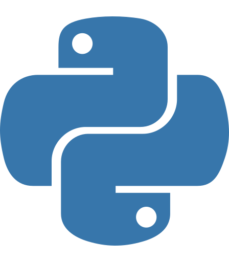
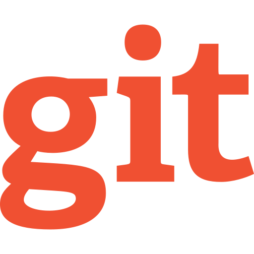
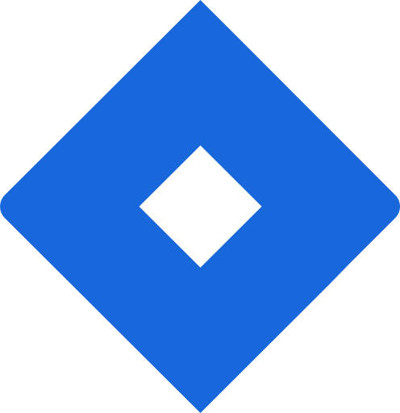

▣ Data Engineering
SQLPythonPySparkAzureDatabricksETL / ELTData PipelinesDelta Lake
BUILDING A DATA-DRIVEN FUTURE
Data Engineer with 4+ years of IT and End User Computing experience, with hands-on knowledge of Databricks, Python, SQL, PySpark and Azure. I bring strong enterprise experience across Windows, SCCM, Active Directory, Intune, Microsoft 365 and ServiceNow, with a focus on building practical data engineering solutions, reliable pipelines and analytics.
Data Engineer with hands-on knowledge of Databricks, Python, SQL, PySpark, Azure, ETL/ELT and data pipeline concepts, backed by 4+ years of IT and End User Computing experience. I also bring practical enterprise experience across Windows administration, SCCM, Active Directory, Intune, Microsoft 365, ServiceNow and application support.
I apply my enterprise IT experience alongside hands-on Data Engineering knowledge, working with Azure, Databricks, Python, SQL and PySpark to build practical data solutions.
A simple progression from enterprise technology to cloud and data engineering.
Windows, SCCM, Active Directory, Intune and Microsoft 365.
Cloud fundamentals, administration and Azure services.
SQL, Python, PySpark, ETL/ELT and data pipelines.
Lakehouse concepts, Delta Lake and practical projects.
Future focus on intelligent data and AI solutions.
CURRENTLY BUILDING
Azure Databricks Data Engineering Project
An end-to-end data engineering project planned around data ingestion, medallion architecture, data quality, anomaly detection and analytics.
🚧 In DevelopmentThe architecture and implementation will be updated as each stage is completed.
Windows
SCCM / MECM
Intune
Active Directory
Endpoint Management
Azure Portal
Azure Administration
Azure Data Services
Azure Fundamentals
SQL
Python
PySpark
Databricks
Data Pipelines
Delta Lake
Microsoft 365
ServiceNow
SolarWinds
OneDrive
SharePoint
Teams
Technologies and platforms I work with across Data Engineering and Enterprise IT.
Data platforms, processing and pipeline technologies.

Python PySpark Azure
⇢ETL / ELT
Azure
⇢ETL / ELT
Development tools and everyday engineering workflow.
 IntelliJ IDEA
IntelliJ IDEA

Git GitHub
Python
GitHub
Python

JiraCloud and enterprise platforms used in practical environments.
Azure Portal
Microsoft 365
Intune
SharePoint
 OneDrive
OneDrive
Tools supporting endpoint, service and infrastructure operations.
 SCCM / MECM
Active Directory
SCCM / MECM
Active Directory
 ServiceNow
ServiceNow
 SolarWinds
SolarWinds
 Teams
Teams
2022 – Present | 4+ Years
KLU University
2024 – 2027 • Expected Aug 2027Currently PursuingElectronics & Communication
SDM College, UjireCompletedOpen to opportunities, collaborations and conversations around Data Engineering, Azure and Enterprise IT.